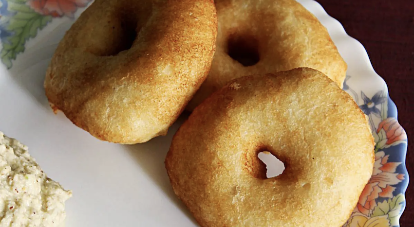

Vada Recipe

Vada are crispy,fluffy & delicious donut shaped lentil fritters from South India.
Till day,traditionally made vada are offered to Dieties during puja.
Ingredients
- urad dal
- chana dal
- methi seeds
Intsructions
- wash all the ingredients
- make the batter
- make the vada
MAIN